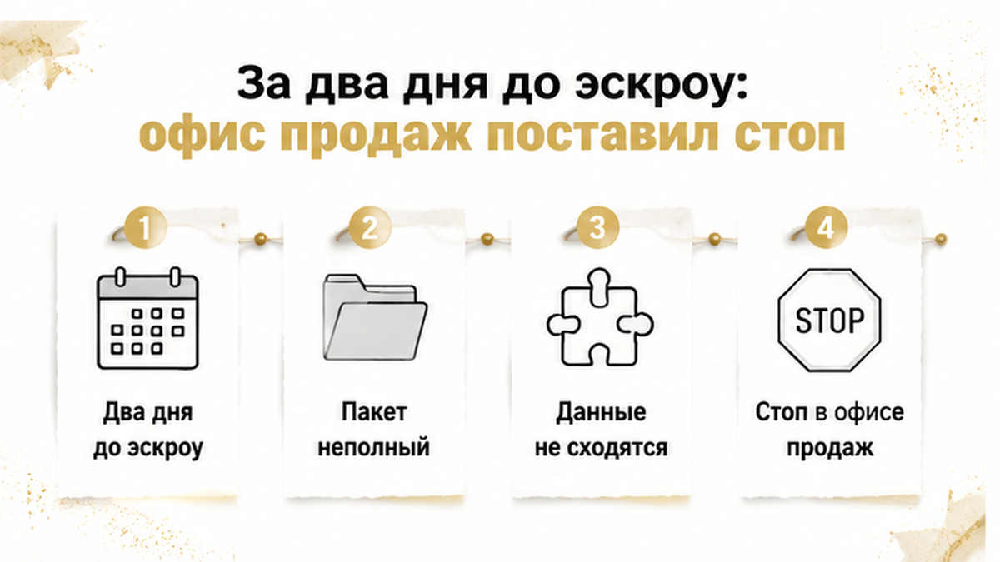
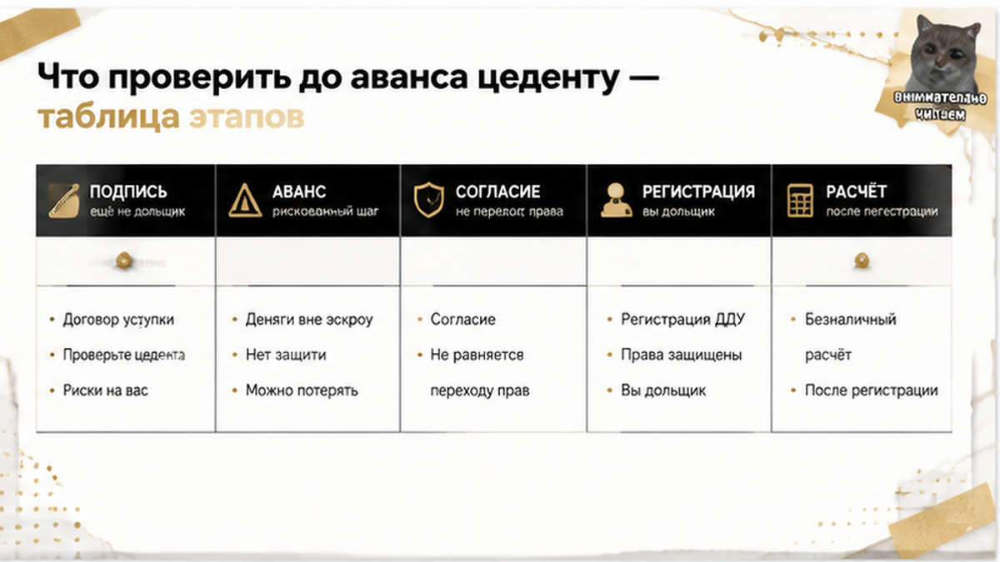
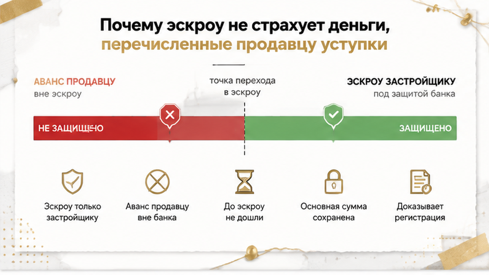

За два дня до открытия эскроу семья из Тюмени узнала, что дольщиками они не были ни одного дня. Договор уступки подписали, аванс продавцу внесли, планировку выбрали. В офисе застройщика оформление остановили: пакет неполный, данные расходятся, оплата цены договора под вопросом. Участником в реестре так и остался прежний дольщик — тот самый человек, который взял их аванс. В банк на открытие эскроу семью ждали через два дня.
Святослав Шакин, The Риэлтор, Тюмень. Разбираю переуступки, эскроу и стопы застройщиков на конкретных сделках — пишите напрямую, отвечаю сам.
Telegram: t.me/Tyumen_Rieltor · MAX: Святослав Шакин, The Риэлтор
Самая дорогая иллюзия в переуступке звучит просто: подписали договор с продавцом, отдали деньги — значит, квартира наша. Я слышу это на каждой второй такой сделке и каждый раз вынужден разочаровывать.
В переуступке вы покупаете не квартиру и не бетон, а право требования к застройщику. Договор долевого участия уже зарегистрирован, только не на вас, а на другого человека. Право переходит не в момент подписи и не в момент оплаты, а в момент государственной регистрации уступки.
Пока регистрации нет, участник строительства — прежний человек. Он в реестре, он в базе застройщика, он вправе требовать ключи и неустойку.
Закон здесь короткий. Статья 11 закона 214-ФЗ разрешает уступку после того, как первый дольщик полностью оплатил цену договора, либо одновременно с переводом долга на покупателя. Окно узкое: от регистрации ДДУ до подписания акта передачи квартиры. Статья 382 Гражданского кодекса добавляет: право требования переходит через сделку, а застройщика о ней уведомляют в простой письменной форме.
Перевожу с юридического на кухонный: сначала регистрация, потом вы дольщик. Обратный порядок закон не предусмотрел.
Поэтому перевод денег продавцу подтверждает ровно одно: деньги ушли конкретному физлицу. До регистрации уступки у вас на руках не квартира, а требование к человеку, который взял аванс. Держится всё на его добросовестности, а не на законе.
Ровно та же конструкция была в истории, где расписку на квартиру написали, а денег на счёте не оказалось: расчёт прошёл раньше, чем сделка юридически закрылась.
У тюменской семьи на руках лежал подписанный договор уступки и переданный аванс. Статуса дольщика не было ни секунды.
В офисе всё начиналось буднично. Менеджер взяла папку, открыла карточку дома, начала заводить нового участника — и остановилась на середине.

«Эту уступку мы в таком виде не согласовывали», — сказала она. Дальше пошёл список: каких бумаг не хватает, где данные не сходятся, закрыт ли вопрос оплаты цены и перевода долга.
Причин назвали несколько, и все они настоящие. Пока причины не сняты, нового участника застройщик у себя не проводит, а такой пакет и на регистрацию уходить не должен.
Здесь важно развести две вещи, которые в панике сливаются в одну. Обычно согласие застройщика на уступку не требуется — если цена ДДУ оплачена полностью и в договоре нет отдельного условия. Но сам договор я читаю всегда: согласие вполне может оказаться обязательным.
Оно нужно, когда в ДДУ прямым текстом написано: уступка только с письменного согласия застройщика. Нужно, когда цена не погашена и уступка идёт вместе с переводом долга — тут застройщик кредитор, и слово за ним. Нужно, когда право требования в залоге у банка: тогда письменное согласие даёт залогодержатель. И стоп законен, когда пакет просто не отвечает требованиям к форме и составу документов.
Отсюда простое различие. Законный запрос документов — не отказ, а пауза до устранения: донесите бумаги, сверьте данные, закройте вопрос оплаты. Спорный отказ выглядит иначе: цена оплачена полностью, запрета в договоре нет, а уступку всё равно не пропускают. Там уже начинается переписка, позиция, иногда суд.
У семьи был первый сценарий, не самый страшный. И всё равно он стоил им сделки, потому что стоп совпал с календарём.
Отдельно скажу про фразу, которую я слышал десятки раз: «застройщик всё подпишет, у нас так все делают». Менеджер обычно даже не врёт — он говорит про типовые сделки вообще, а не про вашу уступку. Устное «подпишем» не заменяет письменную позицию застройщика по конкретному договору.
Стоп на этапе переоформления — не экзотика для тюменских новостроек. В другой сделке застройщик сменил юрлицо и дольщикам прислали новый ДДУ, а эскроу так и не открыли. Механика другая, а точка остановки та же: между подписью и деньгами.
Дальше сделку решили не переговоры, а календарь. Бронь была оформлена на прежнего дольщика — того самого человека, который продавал право требования и уже держал аванс семьи. Пока в офисе дособирали бумаги, сверяли расхождения в данных и выясняли, нужно ли согласие застройщика, срок брони закончился.
«Продлить не можем, бронь не на вас», — сказали семье. Формально это было верно: в документах покупатель участником долевого строительства не значился ни одного дня. Квартира вернулась в свободную продажу — уже с актуальным прайсом, а не с той ценой, о которой договорились месяц назад.
Скажу прямо: офис продаж здесь никого не обманул. Запрос документов, единая форма договора уступки, сверка данных продавца и покупателя, вопрос о полной оплате цены — законная часть процедуры, а не придирки. Другое дело, когда цена оплачена целиком, запрета в договоре нет, а уступку всё равно не согласовывают: вот это уже незаконно, и путать две ситуации я не советую.
Только семье в тот день от такой разницы легче не стало. Аванс возвращали через претензию продавцу — со ссылкой на договор уступки, при необходимости через суд. Оплата продавцу сама по себе право требования к застройщику не подтверждает.
И вот здесь главное: стоп случился до открытия эскроу, поэтому деньги, которые семья готовила застройщику, остались у семьи. Это не история про замороженные миллионы, как в случае, когда ключи от новостройки в Тюмени перенесли на год, а средства на эскроу-счёте заморозили.
Семья потеряла месяц, бронь и планировку, которая нравилась, но основную сумму сохранила. Цена такой ошибки и цена замороженных миллионов — две разные вселенные.
Переуступку оплачивать до согласия застройщика — или сначала требовать письменное подтверждение, что уступку зарегистрируют? Напишите в комментариях, как поступили бы вы.

Самое полезное из этой истории — трезво понимать, на каком шаге вы стоите сегодня. Обычный покупатель считает себя дольщиком с момента подписи у продавца: платит аванс, планирует ремонт, выбирает плитку. В документах он в этот момент ещё никто. Ниже та же цепочка по шагам, с ответом на два вопроса: кто числится участником ДДУ и где в этот день ваши деньги.
| Шаг сделки | Кто участник ДДУ по документам | Где ваши деньги | Что делать на этом шаге |
|---|---|---|---|
| Подписан договор уступки с продавцом | Прежний дольщик (цедент) | Ещё у вас | Прочитать исходный ДДУ: пункт об уступке и согласии, факт полной оплаты цены |
| Внесён аванс продавцу | Прежний дольщик (цедент) | У продавца, не на эскроу | Самый рискованный шаг: без письменной позиции застройщика по этой уступке лучше не платить |
| Получено письменное согласие застройщика (если требуется из-за договора или долга) | Всё ещё прежний дольщик | Не двигать до регистрации | Согласие — условие сделки, а не переход права; сверить форму договора и комплект на регистрацию |
| Договор уступки прошёл госрегистрацию | Вы | С этой точки расчёт корректен | Забрать документ с отметкой о регистрации и только потом закрывать расчёт |
| Застройщик уведомлён о состоявшейся уступке | Вы | Дальше — эскроу по первичному договору отдельно | Уведомление в простой письменной форме, зафиксировать дату и получателя |
Список ниже короткий и совсем не про юридические тонкости. Это бумаги, которые я прошу подержать в руках до того, как деньги уйдут продавцу.
Отдельно скажу про расчёт. Платёж имеет смысл привязывать к государственной регистрации, а не к обещанию менеджера. Когда право требования продаёт компания, деньги передаются после регистрации уступки — так требует 214-ФЗ; между обычными людьми тот же принцип собирают через аккредитив или ячейку.
Волшебной кнопки тут нет: ни аккредитив, ни ячейка не снимают всех рисков и не заменяют чтение исходного ДДУ. Но одну вещь они делают точно — деньги перестают уходить раньше, чем меняется участник долевого строительства.

Вот здесь у покупателей чаще всего рвётся картинка мира. Я объясняю это почти на каждой консультации по новостройке, и каждый раз вижу одно и то же удивление.
Эскроу — это обычный счёт в банке. Дольщик кладёт туда деньги за квартиру, а застройщик забирает их только после сдачи дома и передачи ключей. Пока идёт стройка, сумма лежит и ждёт — за это новостройку и считают безопасной покупкой.
В переуступке появляется вторая линия расчётов, и о ней думают редко. Вы платите не застройщику, а живому человеку, который выходит из проекта и отдаёт вам своё право требования. Его аванс на эскроу не попадает, банк такие деньги не блокирует и вместе с правом требования они никуда не переезжают.
Скажу проще. Эскроу стережёт ваши деньги перед застройщиком, а перед продавцом уступки вас не стережёт никто, кроме вас самих.
Тюменскую семью это и спасло от крупной потери. До банка они дойти не успели, эскроу по квартире так и не открыли, и основная сумма осталась при них. Пострадал только аванс продавцу: его возвращали через претензию, а при необходимости — через суд.
Запомните одну строчку. Оплата продавцу не доказывает, что вы купили право требования к застройщику. Доказывает это только зарегистрированный договор уступки.
Сравните три точки стопа. Когда семейную ипотеку на новостройку одобрили, а эскроу не открыли, сделка встала уже в банке. Когда ключи от новостройки перенесли на год, а деньги на эскроу заморозили, сумма хотя бы лежит под присмотром банка. Переуступка коварнее: первый платёж уходит продавцу ещё до регистрации, и никакого банка между вами и ним нет.
Отдельная история — залог, о котором вспоминают в последний день. Если право требования заложено банку, нужно письменное согласие залогодержателя, а это отдельный срок. Берёте уступку в кредит — согласуйте заранее и согласие, и регистрацию цессии, и открытие счёта: эскроу с одного участника на другого автоматом не переносится.
Аккредитив или ячейка тут помогают, они привязывают оплату к регистрации. Но чтение исходного ДДУ ни то ни другое не заменяет, и я на этом настаиваю всегда.
Смотрите квартиру по переуступке в тюменской новостройке и не понимаете, что подписываете — напишите, разберу договор до аванса: Telegram или MAX.
Теперь неприятное для тех, кто идёт в переуступку за экономией. Дешевле выходит далеко не всегда, а нередко ровно наоборот.
Издание Dvizhenie.ru 31 августа 2026 года дало такую выборку. Средний квадратный метр в Тюмени в переуступке — 167,0 тыс. ₽, у застройщика напрямую — 158,3 тыс. ₽. Разница около 5% в пользу прямого договора: переуступка здесь дороже, а не выгоднее. Оговорюсь сразу: это методика конкретного издания, а не официальная статистика, и в отдельном доме цифры разойдутся в любую сторону.
Логика за цифрой понятная. В переуступке продают то, чего у застройщика в прайсе уже нет: удачный этаж, вид из окна, редкую планировку, дом на высокой стадии, лот со старой ставкой. За такую позицию продавец просит премию, и рынок эту премию платит.
Поэтому «возьмём переуступку, там дешевле» в Тюмени срабатывает не всегда. А юридических шагов в такой сделке заметно больше, чем в прямой покупке у застройщика.
Сама переплата в 5% — ещё не приговор переуступке. Приговор — переплата плюс непроверенный пакет документов плюс аванс до регистрации.
У семьи из этой истории итог вышел обидным, но не катастрофическим. Месяц поисков и бронь на понравившуюся квартиру они потеряли, крупную сумму сохранили. Развилка при этом была ровно одна.
Запроси они до аванса письменный ответ застройщика по этой уступке и проверь, полностью ли оплачена цена исходного договора, — стоп случился бы на бумагах, а не на деньгах. Результат тот же, только без потерянного аванса и без претензии цеденту.
Я держу в руках до аванса продавцу простой набор: зарегистрированный исходный ДДУ, пункт про уступку и согласие, подтверждение полной оплаты, ясность с залогом и долгом. Плюс письменный ответ застройщика именно по вашей сделке, а не «мы обычно всё подписываем». Расчёт я привязываю к регистрации, а не к обещанию менеджера.
И одна мысль на всю сделку. Подпись с продавцом делает вас стороной договора уступки, а дольщиком делает только регистрация. Между этими двумя точками деньги лучше держать при себе.